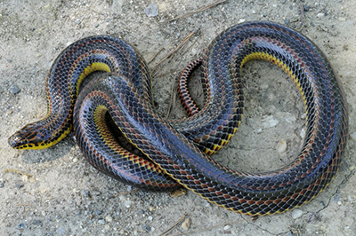
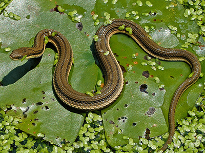
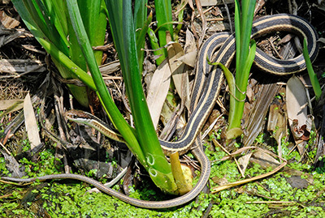

|  | Common Rainbow SnakeThe scientific name for the Common Rainbow Snake is Farancia erytrogramma erytrogramma. Found in creeks, rivers, ditches, marshes, woods, and fields. Habitats are found in most of the tidewater region |
 | QueensnakeThe scientific name for the Queensnake is Regina septemvittata. Found in streams, under rocks, and in ditches. Habitats are found in all of Virginia except for most of the tidewater region. |
 | Common RibbonSnakeThe scientific name for the Common RibbonSnake is Thamnophis sauritus sauritus. Found in marshes, floodplains, streams, ditches, meadows, bogs, and woodlands. Habitats are found in most of Virginia except for the western panhandle and Highland county, Bath county, Alleghany county |
All pictures copyrighted by the Virginia Herpetological Society http://www.virginiaherpetologicalsociety.com/index.html. Photos used with permission.